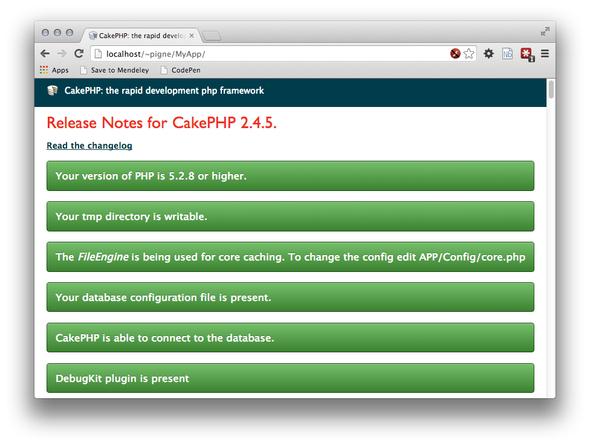

Le Havre University
Yoann Pigné
2014
Détails de l'installation (LINUX) de CakePHP sur les machines de TP de l'UFR.
LOGIN est utilisé, il s'agit de votre login qu'il faut remplacer. L'application est nommée MyApp. Bien-sûr, ce nom peut être changé. cd ~/public_html
wget https://github.com/cakephp/cakephp/zipball/2.4.5 --no-check-certificate
unzip 2.4.5
mv cakephp* MyApp
cd MyApp.htaccess~/public_html/MyApp/)LOGIN est votre login perso...
Le fichier .htaccess : ajouter /~LOGIN/MyApp/ à la rêgle Rewrite. Le fichier doit ressembler à cela :
<IfModule mod_rewrite.c>
RewriteEngine on
RewriteRule ^$ /~LOGIN/MyApp/app/webroot/ [L]
RewriteRule (.*) /~LOGIN/MyApp/app/webroot/$1 [L]
</IfModule>app/.htaccess : Idem.<IfModule mod_rewrite.c>
RewriteEngine on
RewriteRule ^$ /~LOGIN/MyApp/app/webroot/ [L]
RewriteRule (.*) /~LOGIN/MyApp/app/webroot/$1 [L]
</IfModule>app/webroot/.htaccess: Ajouter la ligne RewriteBase /~LOGIN/MyApp/app/webroot/ avant la ligne RewriteCond (ligne 3).<IfModule mod_rewrite.c>
RewriteEngine On
RewriteBase /~LOGIN/cakephp/app/webroot/
RewriteCond %{REQUEST_FILENAME} !-d
RewriteCond %{REQUEST_FILENAME} !-f
Rewrit
eRule ^(.*)$ index.php [QSA,L]
</IfModule>Copier le fichier de configuration par défaut :
cp app/Config/database.php.default app/Config/database.phpModifier le fichier app/Config/database.php :
public $default = array(
'datasource' => 'Database/Mysql',
'persistent' => false,
'host' => 'ust-info',
'login' => 'LOGIN',
'password' => 'xxxxxxx',
'database' => 'LOGIN',
'prefix' => 'myApp-', // !!! Attention !!! Si un préfixe est indiqué ici,
// il faudra l'ajouter au nom des tables dans la BD !
'encoding' => 'utf8',
);Les variables salt et seed servent à augmenter la sécurité de votre application. Le contenu de salt est ajouté aux mots de passe et le champ seed est la graine aléatoire pour la génération des jetons CSRF (comme vu en cours).
DebugKit est un utilitaire qui offre des information utiles en phase de développement.
wget https://github.com/cakephp/debug_kit/archive/master.zip --no-check-certificate
unzip master.zip
mv debug_kit-master app/Plugin/DebugKit
rm master.zipapp/Config/bootstrap.php ajouter (n'importe où):CakePlugin::load('DebugKit');Inclure la bare d'outils dans tous les contrôleurs. On utilise la classe mère AppController dans app/Controller/AppController.php:
public $components = array('DebugKit.Toolbar');Régler le mode debug à 2 dans app/Config/core.php:
Configure::write('debug', 2);Retirer tous les appels à sql_dump dans les layout
app/View/Layouts/default.ctpapp/View/Layouts/error.ctp
A Simple blog application. Step by step.
Check the status in: http:://ust-info/~LOGIN/MyApp

CREATE TABLE IF NOT EXISTS `posts` (
`id` int(10) unsigned NOT NULL AUTO_INCREMENT,
`title` varchar(50) CHARACTER SET utf8 COLLATE utf8_bin DEFAULT NULL,
`body` text CHARACTER SET utf8 COLLATE utf8_bin,
`created` datetime DEFAULT NULL,
`modified` datetime DEFAULT NULL,
PRIMARY KEY (`id`)
)
INSERT INTO `posts` (`id`, `title`, `body`, `created`, `modified`) VALUES
(1, 'The titlezkfjalkezf', 'This is the post body...', '2014-02-16 16:11:16', NULL),
(2, 'A title once again', 'And the post body follows.', '2014-02-16 16:11:16', NULL),
(3, 'Title strikes back', 'This is really exciting! Not.', '2014-02-16 16:11:16', NULL),
(4, 'My new idea I want to share', 'qsdfqsdfqsdfqsdfqsdf', '2014-02-16 17:41:16', NULL);
// app/Model/Post.php
class Post extends AppModel {
}
// app/Controller/PostsCrontroller.php
class PostsController extends AppController {
public $helpers = array('Html', 'Form');
public function index() {
$this->set('posts', $this->Post->find('all'));
}
}
<!-- app/View/Posts/index.ctp -->
<h1>List of Posts</h1>
<table>
<tr>
<th>Title</th><th>Created</th>
</tr>
<?php foreach ($posts as $post): ?>
<tr>
<td>
<?php echo $this->Html->link(
$post['Post']['title'],
array('action' => 'view', $post['Post']['id'])
);
?>
</td>
<td>
<?php echo $post['Post']['created']; ?>
</td>
</tr>
<?php endforeach; ?>
</table>
// app/Controller/PostsCrontroller.php
public function view($id = null) {
if (!$id) {
throw new NotFoundException(__('Invalid post'));
}
$post = $this->Post->findById($id);
if (!$post) {
throw new NotFoundException(__('Invalid post'));
}
$this->set('post', $post);
}
<!-- app/View/Posts/view.ctp -->
<h1>View Post</h1>
<article>
<h2><?php echo $post['Post']['title'];?></h2>
<section><p><?php echo $post['Post']['body'];?><p></section>
<aside>
<p>Created: <?php echo $post['Post']['created'];?></p>
<p>Modified: <?php echo $post['Post']['modified'];?></p>
</aside>
</article>
// app/Controller/PostsCrontroller.php
class PostsController extends AppController {
public $helpers = array('Html', 'Form', 'Session');
public $components = array('Session');
// ...
public function add() {
if ($this->request->is('post')) {
$this->Post->create();
if ($this->Post->save($this->request->data)) {
$this->Session->setFlash('Your post has been saved.');
$this->redirect(array('action' => 'index'));
} else {
$this->Session->setFlash('Unable to add your post.');
}
}
}
}
<!-- File: app/View/Posts/add.ctp -->
<h1><?php __('Add Post');?></h1>
<?php
echo $this->Form->create('Post');
echo $this->Form->input(__('title'));
echo $this->Form->input(__('body'), array('rows' => '3'));
echo $this->Form->end(__('Save Post'));
?>
<!-- File: app/View/Posts/index.ctp -->
<!-- ... -->
<ul>
<li>
<?php echo $this->Html->link('Create a new Post', array('action' => 'add')); ?>
</li>
</ul>
// app/Model/Post.php
class Post extends AppModel {
public $validate = array(
'title' => array(
'rule' => 'notEmpty',
'message' => 'Please provide a title for your post'
),
'body' => array(
'rule' => 'notEmpty'
)
);
}
public function edit($id = null) {
if (!$id) {
throw new NotFoundException(__('Invalid post'));
}
$post = $this->Post->findById($id);
if (!$post) {
throw new NotFoundException(__('Invalid post'));
}
if ($this->request->is('post') || $this->request->is('put')) {
$this->Post->id = $id;
if ($this->Post->save($this->request->data)) {
$this->Session->setFlash('Your post has been updated.');
$this->redirect(array('action' => 'index'));
} else {
$this->Session->setFlash('Unable to update your post.');
}
}
if (!$this->request->data) {
$this->request->data = $post;
}
}
<!-- app/View/Posts/edit.ctp -->
<h1>Edit Post</h1>
<?php
echo $this->Form->create('Post');
echo $this->Form->input('title');
echo $this->Form->input('body', array('rows' => '3'));
echo $this->Form->input('id', array('type' => 'hidden'));
echo $this->Form->end('Save Post');
?><!-- app/View/Posts/view.ctp -->
<!-- ... -->
<li>
<?php echo $this->Html->link("Edit this post",
array('action' => 'edit', $post['Post']['id'])
);
?>
</li>public function delete($id) {
if ($this->request->is('get')) {
throw new MethodNotAllowedException();
}
if ($this->Post->delete($id)) {
$this->Session->setFlash('The post with id: ' . $id . ' has been deleted.');
$this->redirect(array('action' => 'index'));
}
}
<!-- app/View/Posts/index.ctp -->
<!-- ... -->
<td>
<?php echo $this->Html->link('Edit',
array('action' => 'edit', $post['Post']['id'])); ?>
<?php echo $this->Form->postLink(
'Delete',
array('action' => 'delete', $post['Post']['id']),
array('confirm' => 'Are you sure?'));
?>
</td>
<!-- ... -->